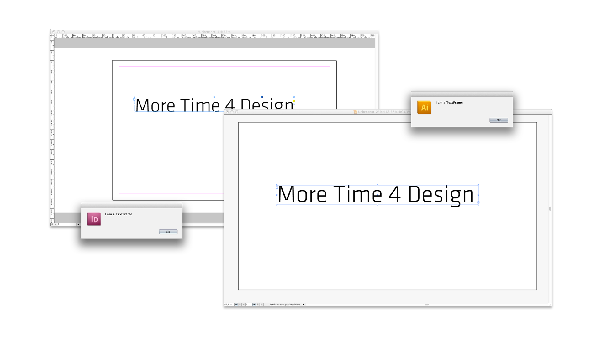
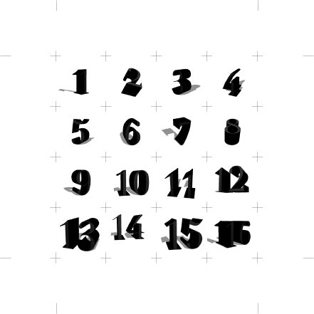
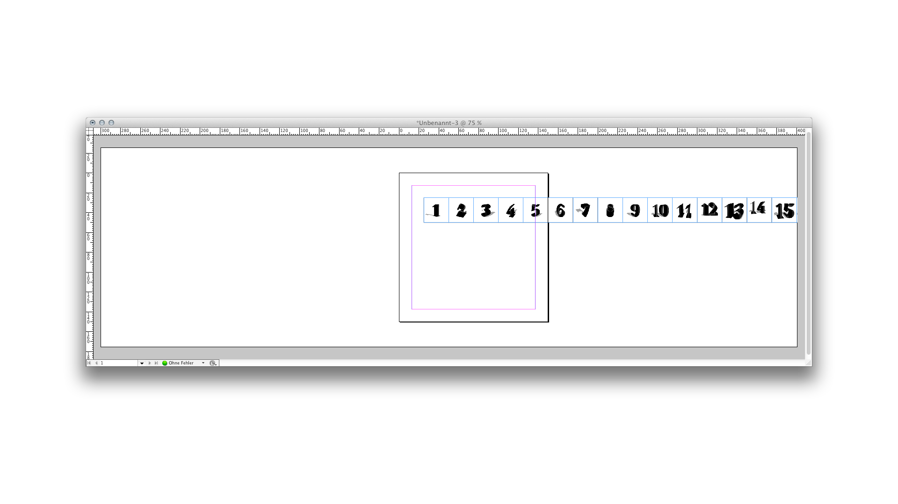
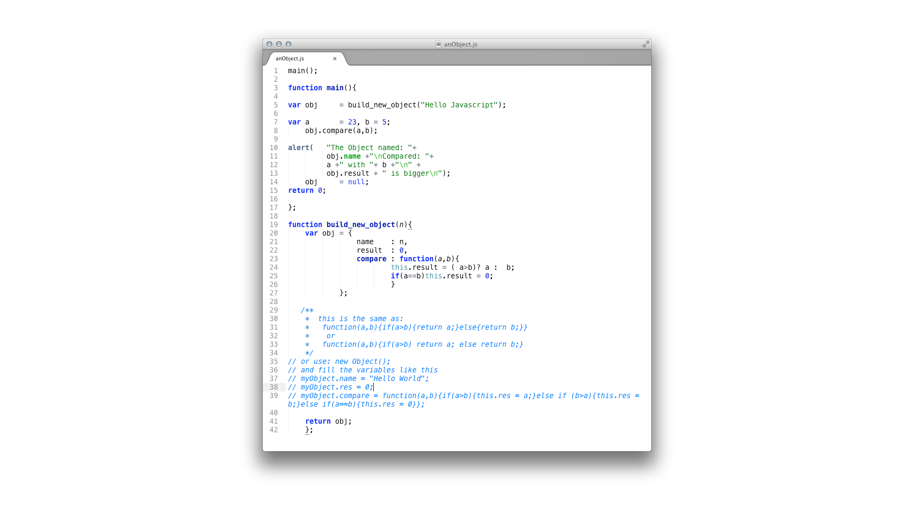
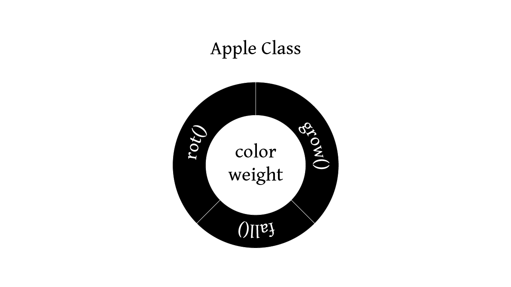
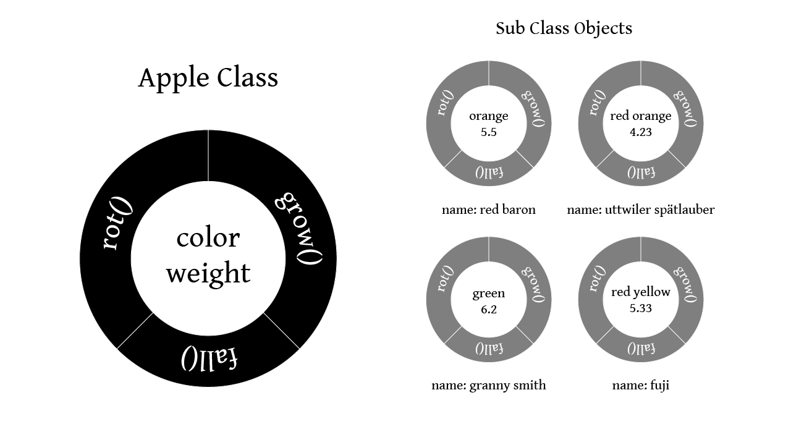
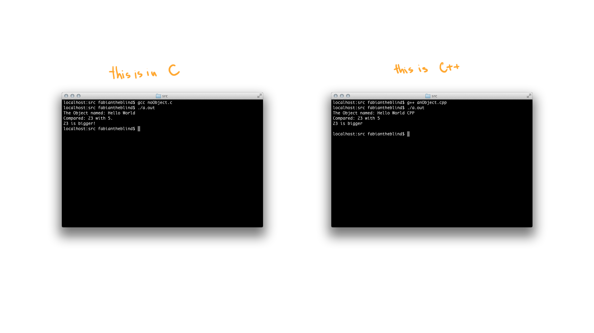
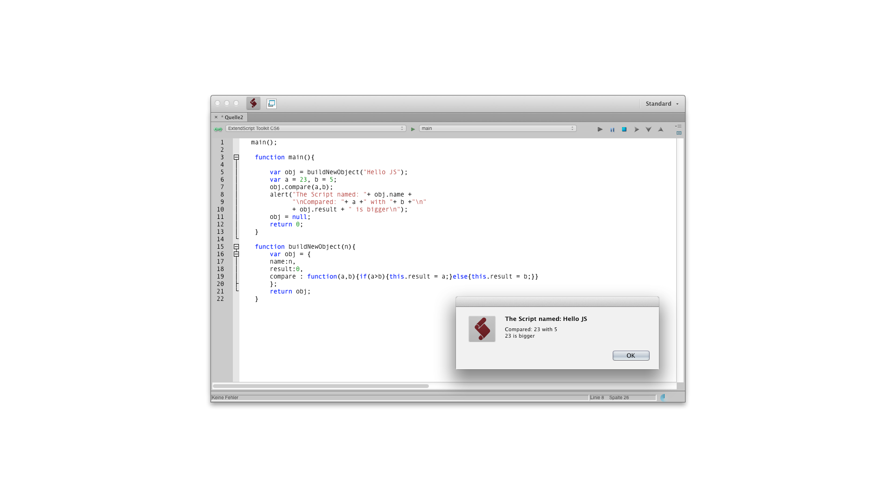

BA von Fabian Morón Zirfas
Mehr Zeit für Gestaltung
Einleitung
Diese Arbeit setzt sich mit der Automation von Design-Prozessen auseinander. Sie ist keine komplette Anleitung zum Erlernen von Programmier Grundkenntnissen, diese können für viele verschieden Sprachen im "World Wide Web" gefunden werden, sondern eine Auseinandersetzung was Automation durch Programmierung für Designer leisten kann und welche Bereiche sie nicht abdeckt. Dies wird durch einige kurze Beispiele illustriert. Sie, die Arbeit, ist der versuch die Mystik und nebulösen Vorstellungen die sich um Computerprogramme ranken zu brechen und die Schnittstellen die aktuelle Grafikprogramme bieten auf zu zeigen.
Abschliessend soll im Fazit der Erkenntniszuwachs aus all dem zusammengefasst werden.
Bevor sie Einsteigen
Bevor sie weiterlesen einige Hinweise. Wenn sie noch keine Erfahrungen mit Programmierung gemacht haben lassen sie sich nicht abschrecken. Es werden einige für den Laien unverständliche Zeilen vorkommen und einige die sich aus dem Kontext oder den Namen der Funktionen erschliessen lassen. Falls sie die Beispiele in Abschnitt Eins und Zwei ausprobieren möchten lesen sie den Abschnitt Terminologie [NUMMER] "Hello World" zuerst. Dort wird erklärt wie und wo sie Skripte schreiben und ausführen können. Es werden Fachausdrücke vorkommen die ebenfalls im Abschnitt Terminologie [NUMMER] erklärt werden. Ab dem Abschnitt [NUMMER] Das Szenario steigen wir dann voll in das lesen und wenn sie möchten schreiben von Skripten ein. Dafür sollte zumindest der eben genannte Abschnitt einmal nachvollzogen worden sein. Wenn die dort dargestellten Zusammenhänge und Konstrukte zu komplex sind verschaffen sie sich etwas Übung. Es existiert eine schöne Webseite genannt codecademy.com auf der sie in einigen lustigen Aufgaben durch die Grundlagen von JavaScript geführt werden. Wenn mal etwas nicht funktioniert - verzweifeln sie nicht. Kontrollieren sie ihre Schreibweise und suchen sie sich weiterführende Informationen im Netz. Die einfachste Möglichkeit ist den gewünschten Befehl samt JavaScript (z.B. "alert() JavaScript") in einer Suchmaschine einzugeben. Da das Netz voll von JavaScript ist spuckt es in 99% der Fälle auch die richtige Dokumentation aus. Werfen sie ebenfalls einen Blick in die Referenz-Liste. Dort finden sie viele Ressourcen für "Scripting" die ihnen den Einstig erleichtern werden.
Scripting languages assume that there already exists a collection of useful components written in other languages. Scripting languages aren't intended for writing applications from scratch; they are intended primarily for plugging together components
Scripting: Higher Level Programming for the 21st Century by John K. Ousterhout (online)
Teil 1 Wann soll ich Skripten?
Auch wenn Aufgaben auf unterschiedliche Weise mit verschiedenen Programmiersprachen gelöst werden können haben sich spezielle Anwendungsgebiete für die einzelnen Sprachen ergeben. Ganz unabhängig davon, dass sich in unserem Fall Adobe Anwendungen mit JavaScript ansprechen lassen macht es Sinn eine Skriptsprache zu verwenden um die bereits in höheren Sprachen implementierten Funktionen zu verbinden.
JavaScript ist unser Kleber. Wir müssen das Rad nicht neu erfinden. Wir können jedoch unseren Arbeitsablauf durch gezielte Befehlsketten von repetitive Aufgaben befreien. Ich bin mir sicher dass ein Grossteil aller Gestalter die vorgefertigte Software für ihre Arbeit verwenden schon einmal an den Punkt kamen wo sie sich dachten: "Warum kann mein Programm DAS nicht," ([MARGINALSPALTE]DAS steht hier für eine gewünschte Funktionsweise) "es ist doch alles da. Der Knopf und danach diesen Knopf!". Scripting erlaubt es uns diese beiden Knöpfe mit einander zu verbinden. Das bedeutet dann, dass wir unsere Arbeit um einen "Klick" reduziert haben. Wir haben zwei Knöpfe durch Verkettung auf einen neuen Knopf gelegt. Natürlich klingt die Reduktion um einen Klick vernachlässigbar. Wenn Jedoch diese zwei Klicks 100 mal ausgeführt werden müssen und wir durch logische Anweisung diese ebenfalls auf nur einen Knopf zusammenführen können ist der Zeitgewinn enorm. Ebenfalls muss hier erwähnt werden das viele der Probleme die in einem Gestaltungs-Prozess auftreten nicht zum ersten mal bei eben dieser Person auftreten. Für den Bereich Scripting von Adobe Anwendungen gibt es im Netz viele Seiten und Foren die sich mit diesem Thema befassen. Im Bereich JavaScript gibt es noch viele mehr, da JavaScript auch verwendet wird beziehungsweise entwickelt wurde um Browser zu steuern. Aufgrund dessen ist die Dokumentation mehr als ausgiebig. Es Bedarf nur etwas Übung um die gefundenen Beispiele zu lesen und auf die eigene Problemstellung zu abstrahieren.
Hierbei sei zu beachten!
Scripting kann keine Design Entscheidungen fällen. Es existiert kein Algorithmus ([MARGINALSPALTE] Ein Algorithmus ist ein logische Verkettung von Operationen siehe Abschnitt [NUMMER] Was ist ein Algorithmus) der Ästhetik simuliert. Um eine spannende Komposition zu schaffen braucht der Gestalter "nur" drei geometrische Grundformen zu erzeugen und diese im richtigen Verhältnis zu einander anzuordnen. Um dies programmatisch zu lösen müsste ein Skript mehrere hundert mal ausgeführt werden. Jedes mal mit einer kleinen Veränderung der Koordinaten der obig genannten drei Objekte. Davon mal ganz abgesehen, dass der Autor irgendwann entscheiden muss welche Komposition knackig ist. Was das Skript leisten kann ist anhand von bestimmten Rahmenparametern eine Fülle von Varianten zu liefern die von Hand Sehnenscheidenentzündungen hervorrufen würde.
Programmieren ist nicht einfach. Es ist wie eine neue Sprache lernen. Stellen sie sich vor sie sind in einem fremden Land dessen Sprache sie nicht beherrschen. Sie werden zuerst Probleme haben. Dann lernen sie ihre Grundbedürfnisse zu decken. Ab einem gewissen Punkt können sie Tageszeitungen lesen und Inhalte erfassen und abstrahieren. Eines Tages werden sie feststellen, dass sie in der Sprache Träumen. Der Vorteil an Computersprachen im Vergleich zu "Menschensprachen" ist das in der Computersprache kein Raum für Interpretation ist. Jede Aussage MUSS eindeutig sein. In der Kommunikation mit Menschen MUSS interpretiert werden. Dies ist ein Vorteil, dennoch ist eine Sprache zu lernen keine leichte Aufgabe.
Daher sollten sie bevor sie in die Tiefen von JavaScript abtauchen um ein Problem zu lösen entscheiden:
- Welche Operationen sollen ausgeführt werden?
- Wie komplex sind die Operationen?
- Wie ist das Zeitfenster und wann muss das Produkt fertig sein?
- Wie oft muss diese Tätigkeit ausgeführt werden?
- Lässt sich die Automation auch auf andere ähnliche Bereiche anwenden oder mit geringen Aufwand abstrahieren?
- Wie sehr ist sie von Umgebungsvariablen abhängig?
- Soll die Automation von dritten Benutzt werden?
- Ist der Prozess linear oder bedarf es einer Rückkopplung zum Benutzer?
Und einige Punkte die sich hauptsächlich durch Recherche abarbeiten lassen
- Existieren bereits Automationen in dem Sektor und wenn ja lassen sich diese abwandeln?
- Bietet die API direkten Zugriff auf die benötigten Funktionen oder braucht es eine Workaround?
Diese Analyse kann keine genauen Angaben über Zeit und Aufwand machen da dies immer auch vom Erfindungsreichtum des Autors abhängig ist. Der Kreative kommt hier schneller zum Ziel.
- Welche Operationen sollen ausgeführt werden?
Programme oder Skripte schreiben ist nicht wie "Scribbeln". Wir können beim Telefonieren eine Stift in die Hand nehmen und drauf los kritzeln. Beim Programmieren muss das Ergebnis bereits definiert sein bevor geschrieben wird. Natürlich ergeben sich auch während des Schreibens neue Ideen, dennoch muss eine konkreten Vorstellung existieren was das Ziel sein soll. Auch dies ist mit Sprechen zu vergleichen. Erst Denken dann Reden.
- Wie komplex sind die Operationen?
Wenn eine Fülle von unterschiedlichen Operationen ausgeführt werden soll, müssen auch entsprechend viele Anweisungen an das Programm erfolgen und der Autor muss sich auf eine längere Entwicklungszeit einstellen. Wenn es im Gegensatz darum geht eine Hand voll Operationen 1000 mal auszuführen kann es sein, daSs sich der Kern des Skriptes auf 10 Zeile reduziert. DIES bedeutet auch, dasS die Zeit für Entwicklung und Debugging relativ gering sein können und sich der Zeitaufwand lohnen kann.
- Wie ist das Zeitfenster und wann muss das Produkt fertig sein?
Auch hier muss abhängig von der Komplexität des Skriptes und dem eigenem Vermögen geurteilt werden ob dies in dem gegebenen Zeitraum Recherchiert, Entworfen, Geschrieben und "debugged" ([MARGINALSPLATE] Debugging ist der Prozess der Fehlersuche. Siehe Abschnitt [NUMMER] Was ist Debugging?) werden kann. Hinzu kommt, dass das Ergebnis meist nur ein Teilergebnis ist und noch weiterverarbeitet werden muss. Es ist davon auszugehen das etwaige tiefere Fehler erst während des vollem Einsatzes auftreten. Wenn dies in dem entsprechendem Zeitraum nicht zu bewerkstelligen ist sollte von einer Entwicklung abgesehen werden.
- Wie oft muss diese Tätigkeit ausgeführt werden?
Wenn das Skript nur ein einziges mal ausgeführt werden soll, sollte man sich fragen wo darin der Nutzen liegt. Es kann natürlich sein das dies Sinn und Zweck hat und sollte nur bedingt ausschlaggebend sein. Hierbei gilt es zu Unterscheiden das einmalig 1000 mal einen Knopf drücken bereits eine Hilfe sein kann. Einmalig 1000 mal unterschiedliche Knöpfe drücken ist eine Aufgabe die doch besser manuell geschieht.
- Lässt sich die Automation auch auf andere ähnliche Bereiche anwenden oder mit geringen Aufwand abstrahieren?
Wenn dies der Fall ist steigt der Nutzen der Arbeit. Der einmalige Aufwand ein Programm oder Skript für eine immer wieder kehrende beziehungsweise ähnliche Aufgabe zu schreiben reduziert sich im "Nachhinein" durch jede Ausführung. Dies soll heissen: Durch das Schreiben des Programms das ich immer wieder verwende spare ich Zeit in der Zukunft.
- Wie sehr ist sie (Die Aufgabe) von Umgebungsvariablen abhängig?
([MARGINALSPALTE] Das selbstgeschriebene Programm ist in diesem Fall aussen vor. Wie bereits oben erwähnt setzt das Programm alle Möglichkeiten voraus. Das Skript hingegen greift auf bestehende Komponenten zu.) Kann das Skript unabhängig von allen Variablen die der Benutzer setzen kann ausgeführt werden vereinfacht das den Aufwand. Bei einer Abhängigkeit erfordert es immer erst einer Abfrage des "Ist-Status".
Ein kleines Beispiel: In Illustrator oder InDesign wird die aktuelle Auswahl des aktiven Dokuments in einer Liste genannt "selection" geführt.
app.activeDocument.selection;
In dieser Liste liegen Einzelne Objekte die Text sein können oder eine Vektor-Form oder ein Bild. All diese haben gemeinsame Eigenschaften aber auch spezielle. Es muss also bevor eine Eigenschaft genutzt oder verändert werden kann eine Abfrage stattfinden welche Art von Objekt enthalten ist. Das nachfolgende Beispiel funktioniert in InDesign und Illustrator gleich. Es wird der Name des ersten Objekts in der Selektion abgefragt, wenn dies eine Textkiste ist gibt das Skript eine Meldung zurück.
// InDesign & Illustrator
var firstListItem = app.activeDocument.selection[0]; // first object in selection
if(firstListItem instanceof TextFrame){ /* check the type */
alert("I am a " + firstListItem.constructor.name); // and name it
}

{kind=link}
Viele solcher Abfrage können ein Skript schnell komplex werden lassen. Oder anders ausgedrückt je universeller der Nutzen sein soll desto mehr Umgebungsvariablen müssen beachtet werden. Dies benötigt Zeit.
- Soll die Automation von dritten Benutzt werden?
Dies ist ein wichtiger Faktor. Wenn nur der Autor selbst die Automation verwendet kann er seine vorhergehenden Aktionen auf die Bedürfnisse und Beschränkungen des Skriptes anpassen. Wenn jedoch eine unbedarfte oder schlimmer noch eine dem Skripten nicht mä(ö)chtige Person dieses Werkzeug nutzen soll müssen wie bereits oben erwähnt viele Umgebungsvariablen abgefragt oder selber bestimmt werden. Im Programmier-Slang sagt man: "Man muss vom DAU* ausgehen." ([MARGINALSPALTE]Dümmster Anzunehmender User). Dies ist nicht als Beleidigung gedacht. Es soll eher sagen dass alle Benutzerfehler die auftreten können auftreten werden. In diesem Fall bekommt ein Nicht des Programmierens Mächtiger wenn er Glück hat nur eine Fehlermeldung, wenn er Pech hat einen Programmabsturz. In beiden Fällen steigt die Hemmung des Nutzer ungemein das Skript noch einmal zu verwenden. Wenn also Dritte mit ins Spiel kommen erfordert es noch längere Test- und Debug-Phasen.
- Ist der Prozess linear oder bedarf es einer Rückkopplung zum Benutzer?
Wenn dem so ist sollte der Prozess vielleicht in mehrere Skripte zerlegt werden. Für den Fall das Variablen von einem Skript an das nächste übergeben werden müssen kann dies die Komplexität weiter erhöhen. In diesem Fall gibt es die Möglichkeit eigene Textdateien vom Skript kreieren zu lassen in dem Werte abgelegt werden können, Eine "Script Panel" ([MARGINALSPALTE] Ein Script Panel ist eine Erweiterung der Grafischen Oberfläche die es erlaubt während das Skript läuft weiterhin mit dem Programm zu interagieren) zu erzeugen oder eine eigene #targetengine zu erzeugen in der solange das Programm aktiv ist Daten gespeichert werden. Die letzten beiden sind jedoch fortgeschrittene Lösungen die ebenfalls viele Stolpersteine beherbergen können.
Das Beispiel targetengine
Skript 1:
#targetengine "session01"
var myValue = 0; // new value
alert(myValue); // result is 0
myValue++; // increment by 1
Skript 2:
#targetengine "session01"
alert(myValue); // result is 1
Der Algorithmus lautet wie folgt
Start
Sitzung 1
definiere Variable meinWert und Speicher 0 in ihr
zeige Wert von meinWert
erhöhe meinWert im eins
Stop
Start
Sitzung 1
zeige Wert von meinWert
Stop
Dies bedeutet dass das Programm (nicht das Skript) sich den Wert für die Variable myValue gemerkt hat und ihn solange in #targetengine "session01" speichert bis es beendet wird. Hier liegt die Gefahr darin Variablen Namen doppelt zu vergeben. In vielen meiner Skripte speichere ich das aktive Dokument in der variable doc. Wenn diese nun in einer targetengine liegen wird das Programm immer auf das zuletzt doc gleichgesetzte Objekt zugreifen auch wenn dies vielleicht nicht gewünscht ist sondern vom Benutzer nicht beachtet wurde. Auch die Verwendung von Textdateien kann ihre Tücken haben. Auf unterschiedlichen Betriebsystemen werden Dateipfade unterschiedlich gehandhabt. Auch dies will abgefragt und getestet werden. "Last but not least" gibt es noch die Möglichkeit eigene Grafische Benutzeroberflächen zu erzeugen. Dies ist aber eine Variante für erfahrenere Autoren.
Die Recherche-Arbeiten sollten bereits vor dem ersten Entwurf erledigt sein.
- Existieren bereits Automationen in dem Sektor und wenn ja lassen sich diese abwandeln?
Wie bereits oben erwähnt sind viele Probleme bereits einmal aufgetreten am Ende dieser Arbeit ist eine Liste zu finden wo für welchen Zweck nach Informationen gesucht werden kann. Wenn das Problem nicht all zu speziell ist kann es gut sein, dass es bereits ein Skript gibt das entweder genau diese Funktion enthält und wenn nicht auf die eigenen Bedürfnisse angepasst werden kann oder was meist der Fall es mehrere Skripte gibt die Teilprozesse der eigenen Idee beinhalten und als Referenz benutzt werden können. In den seltensten Fällen entsteht ein Skript von Scratch*(aus einem blanken Textdokument).
- Bietet die API direkten Zugriff auf die benötigten Funktionen oder bedarf es eines Workaround?
Das Beispiel try char
Um dies zu erläutern möchte ich mich eines Beispiels bedienen.
InDesign kann nicht erfragen ob ein Zeichen in einer Schriftart enthalten ist. Es gibt kein Feld das so etwas wie Font has Character beinhaltet. Um dieses Abfrage zu simulieren hat Peter Kahrel ([MARGINALSPALTE] Peter Kahrel ist einer der präsentesten InDesign Skripter und Autor von "InDesign mit JavaScript automatisieren" im O'Reilly Verlag) die Funktion try_char geschrieben die hier in einer etwas abgewandelten Form folgt.

Um die folgende Funktion try_char() sinnvoll ausführen zu können benötigen sie ein InDesign Dokument mit einer Textbox auf der ersten Seite, in der Text in einer Schriftart enthalten ist die die Zeichen des Textes nicht enthält.
var tf = app.activeDocument.pages.item(0).textFrames.item(0);
for(var i = 0; i < tf.characters.length;i++){
var theChar = tf.characters.item(i);
try_char (theChar);
};
// original function by Peter Kahrel
// http://www.kahrel.plus.com/indesign/compose_cs3.jsx
// edited by fabiantheblind
function try_char (theChar){
try {
// save the character
var storage = theChar.contents;
// create outline
theChar.createOutlines();
// if we got here it worked, so delete the outline
// if not the next line will be within the catch block
// if not it will cause an error
theChar.remove();
// insert the character (again)
theChar.contents = storage;
} catch(e){
alert("The character "+ theChar.contents +
" could not be converted into an Outline.\n"+
"That means he does not exist in the font:\n\""
+ theChar.appliedFont.name+"\"");
}
}

Diese Funktion macht folgendes. Sie bekommt eine Zeichen als Parameter. Diesen speichert sie temporär in einer Variable. Dann wird das Zeichen genommen und InDesign versucht es in Pfade umzuwandeln. Dies kann nur passieren wenn das Zeichen in der Schrift auch existiert. Sollte dem so sein wird die neu kreierte Vektor-Form wieder verworfen und das Zeichen wird aus dem Zwischenspeicher wieder hergestellt. Wenn jedoch die Umwandlung einen Fehler erzeugt wird dieser aufgefangen. Dies passiert mit dem Konstrukt try { } catch (e) { } Sollte der Inhalt der ersten geschwungenen Klammer oder auch Block genannt einen Fehler erzeugen wird dieser abgebrochen und das Skript führt den Zweiten Block aus. Die Variable e ist in diesem Fall die Fehlermeldung. Probieren sie es mit diesem kurzen Skript aus.
try{
var no_no = nothing; // nothing does not exist
// so this produces an error
}catch(e){
// open a window and show the alert.
// \n is just a breakline
// \" is to show quotation marks in text
alert("This is the error message \"e\":\n" + e);
}

Das Programm wird sie warnen das die Variable nothing nicht existiert.
Solche Lösungen setzen nicht nur ein kreativen Umgang mit Code voraus sondern auch ein tiefes Wissen über die Funktionsweise und Möglichkeiten innerhalb von, in diesem Falle, InDesign.
Die obig genannten Hindernisse schrecken ab. Es klingt alles sehr komplex. Es ist jedoch alles sehr allgemein gehalten und manche Fragen stelle sich auch erst gar nicht. Bei Aufgaben die ein Normal Nutzer niemals manuell machen würde muss sogar ein Skript geschrieben werden wenn sie erledigt werden sollen.
Auch wenn der Prozess des Skript-Schreibens eine Kreative Arbeit ist, ist das Ziel des Skriptes nicht der Kreative Output sondern die Optimierung der eigenen Arbeitsabläufe. Das Skript oder Programm kann niemals die Idee liefern. Es unterstützt den Prozess indem es sich wiederholende Aufgaben erledigt die entweder niemals gemacht worden wären, oder aber vom eigentlichen Kreativem Prozess ablenken.
Teil XX Das Szenario
Um besser zu verstehen was das Skript leisten kann soll hier ein Fall Beispiel aufgemacht werden vor dem jeder Layouter einmal stehen könnte. Stellen sie sich vor ihre Aufgabe ist folgende:
Erzeugen Sie eine quadratische Bildmatrix in InDesign aus einer definierten Anzahl an quadratischen Bildern mit einer festen Grösse.
Das würde bedeuten das wir zum Beispiel 4×4 also 16 Bilder darstellen wollen. Es folgt eine grafische Gegenüberstellung des automatisierten (links) und manuellen (rechts) Prozesses.

Wird ihnen bereits klar worauf ich hinaus will? Bei 16 Bildern kommen wir auf 38 Aktionen. Mit einem Skript haben wir 3 Aktionen. Wenn es eine 10×10 Matrix sein soll sind das 206 Aktionen im Skript sind es weiterhin 3. Der Kern der Aufgabe ist das errechnen des Layouts. Dies muss in der manuellen sowie in der automatisierten Variante passieren. Also kommt auch der Gestalter der sich für die manuelle entschieden hat auch nicht um etwas Mathematik herum. Da wir von Prozessen im Gestalter Alltag reden kann es gut vorkommen das ein Kunde eine solche Aufgabe an sie stellt.
Verändern wir die Aufgabe noch ein wenig:
Erzeugen Sie eine Bildmatrix in InDesign aus einer noch nicht definierten Anzahl an quadratischen Bildern mit einer festen Grösse.

Um dieser Anforderung gerecht zu werden müssen wir in der automatisierten Variante eine Kondition einführen. Wenn die gerundete Wurzel eine Fließkommazahl ist, ist die Seitenhöhe die Seitenbreite plus eine Bildbreit.
Teil 3 Der Einsatz
Die Fragen die sich jetzt stellen sind folgende: "Wie kommt dies zum Einsatz?", "Wie kann ich dies nutzen?". Es folgt nun das InDesign Skript image_matrix.jsx mit etwas mehr als 40 Zeilen Code. Dieses Skript beinhaltet eine Benutzer Interaktion, Dateihandhabung, das Math Objekt ([MARGINALSPLATE] Das Math Objekt ist ein ein bereits bestehender Teil von JavaScript. Es erledigt solche Aufgaben wie Rundung von Werten oder das Berechnen einer Quadratwurzel), Konditionen, eine Schleife, Funktionen, Variablen und es hat einen generativen Charakter. Das Skript erledigt folgende Schritte.
- Frage den Benutzer nach einem Ordner mit jpg Dateien.
- Erzeuge ein Quadratisches Dokument dessen Grösse auf der Quadratwurzel der Menge der Bilder basiert und alle Bilder fast.
- Platziere alle Bilder.
Kopieren sie den nachstehenden Code und bereiten sie einen Ordner mit einigen Jpg-Bildern vor. Das Skript das unten beschrieben wird verarbeitet NUR .jpg Dateien, Dateien die .jpeg oder .JPG heissen werden ignoriert. Es sollten um die 15 bis 30 sein damit die Ausführung des Skriptes nicht zuviel Zeit in Anspruch nimmt. Es kann jedoch auch 100, 1000 oder mehr Bildern verarbeiten. Die genau Menge ist irrelevant. Lesen sie nochmal den Abschnitt [NUMMER] Hello World und führen sie das Skript aus. Wenn der Ordnerauswahl Dialog sich öffnet wähle sie den Ordner mit den Bildern. Das gesamte Skript:
{ // START SCRIPT
main(); // you need a function to be able to cancel a script
function main(){ // all is in here
var w = 25; // the image sizes
var allImages = loadFiles("*.jpg"); // opens a prompt and lets the user choose a folder
if(allImages == null) return; // if that what the function returns null is - cancel
var pw = Math.round(Math.sqrt(allImages.length)) * w + (w*2); // this will hold the page width
var ph = pw;
if(Math.round(Math.sqrt(allImages.length)) != Math.sqrt(allImages.length)){
ph = pw + w;
}
var doc = app.documents.add(); //build a basic document
doc.documentPreferences.pageWidth = pw; // set the width
doc.documentPreferences.pageHeight = ph; // set the height
var page = doc.pages.item(0); // finally - get the first page
var y = w; // the upper left corner
var x = w; // the upper left corner
for(var i = 0; i < allImages.length;i++){ // loop thru all images
var rect = page.rectangles.add({geometricBounds:[y,x,y + w,x + w]}); // add a rectangle to the page
rect.place(allImages[i] ); // place the image
rect.fit(FitOptions.FILL_PROPORTIONALLY); // fit it to the frame
rect.fit(FitOptions.CENTER_CONTENT); // fit it to the frame
x +=w; // increase x by an image width
if(x >= pw - (w)){ // if x is the width minus an image width
x = w; // reset x
y+= w; // and increment y by an image width
}; //end increase x and y conditional
};//close allImages loop
};// end main function
function loadFiles(type){ // the function that loads the files
var theFolder = Folder.selectDialog ("Choose the Folder");// user select a folder
if(!theFolder){ // if the folder is not a folder cancel the script
return; // this cancels the whole function image_loadFiles
}; // end folder check
var allImages = theFolder.getFiles(type);// get the files by type
if((allImages.length < 1)||(allImages == null) ){// again if check if there are images
alert("There are no images of the type: " + type);// hm something went wrong? User error
return null; // so we cancel the function
}else{
return allImages; // give back the images. Success!
};// end all images check
};// end function loadFiles
} // END OF SCRIPT
Ergebnisse image_matrix.jsx
Alle 3 nachfolgenden Bilder sind mit ein und dem selbem Skript erzeugt.


image matrix Schritt für Schritt.
Ein Skript sollte immer in geschwungenen Klammern eingefasst sein. Dies ist nicht zwingend jedoch nützlich falls das Skript von einem anderem Skript evaluiert werden muss. Innerhalb dieser Klammern folgt der gesamte Quelltext.
{}
Als nächstes definieren wir eine Funktion die einmalig aufgerufen wird. Hierbei ist es irrelevant ob der Aufruf vor oder nach der Funktionsdefinition stattfindet. Aus Gründen der Übersichtlichkeit steht hier der Aufruf vor der Definition. Diese Funktion erhält keine Parameter. Später wird auch ein Funktion mit Parametern eingesetzt. Der Zweck den gesamten Code in einer Funktion zu kapseln ist folgender: Wenn es eine hierarchisch höhere Ebene gibt, unsere {} Klammern, kann eine Funktion mit dem Befehl return; beendet werden. Dies ist nützlich um bei Fehlern oder falscher Benutzer Eingabe die Ausführung zu stoppen. Mit dem Befehl return kann nicht nur ein Funktion beendet werden sondern auch ein Wert zurückgeliefert werden.
Wenn wir also schreiben return 1; am Ende einer Funktion wäre das Ergebnis 1. var myValue = main(); Wenn die Funktion main nun einen Wert zurückgeben würde, wäre myValue 1. In unserem Fall benötigt die main() keinen Rückgabewert.
main();
function main(){
}
Wir befinden uns nun in der Funktion main();.
Es folgt die Deklaration der ersten Variable. Sie beinhaltet die Breite (und Höhe) unserer Bilder.
var w = 25;
Wie zu sehen ist entspricht die Variable w*(steht für width) nun 25. w wird im Verlauf des Skriptes mehrmals verwendet. Der Vorteil daran Variablen zu verwenden anstatt immer 25 zu schreiben ist, dass wenn wir die Breite verändern wollen wir dies nur ein einziges mal an w erledigen müssen und alle weiteren Verwendungen von w werden angepasst.
Als nächstes folgt bereits die nächste Subfunktion mit einem Parameter und einem Rückgabewert. In JavaScript werden alle Variablen mit var deklariert. Die Unterscheidung des Typus findet erst bei der Verwendung statt. Deshalb können wir schreiben.
var allImages = loadFiles("*.jpg");
Damit die Funktion auch vorhanden ist fügen wir sie hinter function main(){ } an.
Unser Code sieht also wie folgt aus.
{
main();
function main(){
var w = 25;
var allImages = loadFiles("*.jpg");
}
function loadFiles(type){
return 0;
}
}
Den Rückgabewert werden wir noch verändern, denn wir wollen Bilder laden und nicht 0. Wie oben zu sehen ist erhält loadFiles den Parameter type. Dies ist der Dateityp der später geladen werden soll. type ist genau wie w und allImages eine Variable nur das wir im Parameter Block der Funktion das var weglassen können.
Wenn wir *.* schreiben würden würde unsere Funktion jeden Dateityp laden. Der Einfachheit halber beschränken wir uns auf jpg da wir wissen das InDesign jpg-Dateien laden und platzieren kann.
Als nächstes begeben wir uns in die Funktion loadFiles und betrachten die Dateihandhabung und eine Benutzerinteraktion. Basierend auf dem Ergebnis der Interaktion fällt das Skript eine Konditionale Entscheidung ob es weiter arbeiten soll oder ob es die Funktion loadFiles beendet.
var theFolder = Folder.selectDialog ("Choose the Folder");
if(!theFolder){
return;
};
Bisher waren alle Befehle JavaScript Befehle. Der Befehl Folder.selectDialog ("Choose the Folder") jedoch ist ExtendScript. das Objekt Folder hat eine eigene Funktion selectDialog(parameter). Wir müssen diese Funktion nicht betrachten. Wir müssen nur wissen, dass sie ein Interface öffnet und dem Benutzer die Möglichkeit gibt einen beliebigen Ordner auszuwählen. Der Parameter ist der Text der auf dem Auswahldialog oben zu sehen ist. Der gewählte Ordner wird dann in der neuen Variable theFolder für eine spätere Referenzierung gespeichert. Dann folgt das Konstrukt der Konditionalen Abfrage.
if( Statement ){ Do Something }
Sie besagt, dass wenn die Aussage in der runden Klammer war ist die geschwungene Klammer ausgeführt wird. in unserem Fall wird durch das ! die Aussage negiert. Ausgeschrieben könnte dort stehen if(theFolder == false) oder if(theFolder != true) die Schreibweise if(!theFolder) ist einfach nur verkürzt. Wenn wir if(theFolder) schreiben würden würde das if(theFolder==true) entsprechen. Zu Beachten ist nicht = zu schreiben. Dies bedeutet "ist gleich", == bedeutet "entspricht". Gesprochen wäre unsere Aussage: "Wenn der Ordner nicht existiert - beende die Funktion".
Als nächstes betrachten wir was das Laden der Dateien aus unserem Ordner.
var allImages = theFolder.getFiles(type);
Ordner Objekte (Folder) haben eine weiter eingebaute Funktion: getFiles(parameter). Diese hat auch einen Parameter. Den Dateityp. Hierbei wird nicht nur eine einzelne Datei zurückgegeben sondern eine Sammlung aller Dateien des angegebenen Typs. Dies ist ein Array. Ein Array sollte man sich als eine Liste vorstellen deren Positionen über einen Index aufgerufen werden können. Hierbei ist zu beachten das das erste Objekt in der Liste nicht mit 1 sondern mit 0 angesprochen wird. Also ist allImages[0] das erste Bild unserer Liste.
Nun folgt ein weitere Sicherheitscheck ob wir Bilder gefunden haben und die Bestimmung des Rückgabewerts unserer Funktion. Ebenfalls wird der Nutzer wenn es keine Bilder gibt darauf hingewiesen.
if((allImages.length < 1) || (allImages == null) ){
alert("There are no images of the type: " + type);
return null;
}else{
return allImages;
};
Wie wir oben sehen benutzen wir nochmals die Konditionale Entscheidung if(). jedoch mit einer Erweiterung dem else. Dies bedeutet das auf jeden Fall eine er beiden Blöcke ausgeführt wird. Um es im Pseudocode darzustellen:
Wenn die Aussage zutrifft mach dies ansonsten mach dass
Innerhalb unsere runden Aussage Klammer haben wir mehrere Aussagen verknüpft. wir haben also 2 Aussagen. Mit dem || sagen wir entweder oder. In unserem Fall ist das einmal der Check ob wir mindestens ein Bild haben (allImages.length < 1). length ist eine Eigenschaft jedes Arrays und gibt wenn wir ein Bild haben 1 zurück. Wenn es einhundert sind 100. Wir fragen also ob die länge von unserer Liste kleiner als 1 ist. Diese Aussage verbinden wir mit || dies bedeutet "oder". Wenn also Aussage 1 oder Aussage 2 zutreffen führe den ersten Block aus. Wenn wir beide Aussagen Abfragen wollten müssten wir && schreiben. Dies würde nur den ersten Block ausführen wenn beide Aussagen zutreffen. In unserem zweiten Aussage fragen wir nach null, dies ist etwas ähnliches wie nichts. Also wenn wir einen Fehler beim Laden der Bilder hatten oder allImages nicht existiert. Im ersten Block beenden wir nur die Funktion. Wenn keine der beiden Aussagen zutrifft sollten wir eine Liste von Bildern haben und diese geben wir mit return allImages an unsere Funktion main zurück.
Wir befinden uns wieder in der Funktion main und werden einen weiter Abfrage starten.
if(allImages == null) return;
Wenn loadImages null zurückgibt bricht das Skript ab. Dies ist nötig da loadImages in der Funktion main stattfindet. Also führt ein return in loadImages nur zurück nach main und nicht zum beenden des Skripts. Hier ist ebenfalls eine verkürzte Schreibweise zu sehen. Wir können uns die geschwungenen Klammern sparen wenn wir nur einen einzigen Befehl haben. Das heisst:
if(statement){doSomething;}
entspricht:
if(statement) doSomething
Ebenfalls könnte
if(statement){doSomething;}else{doSomethingElse;}
als
if(statement) doSomething; else doSomethingElse;
abgekürzt werden. Dies geht jedoch nur bei jeweils einem Befehl nach der Aussage.
Als nächstes folgt die Berechnung unserer Seitenbreite und Seitenhöhe. Die Höhe wird nochmals mit einer Kondition überprüft. Wenn die Menge an Bildern nicht in ein Matrix passt, also 3 mal 3 oder 4 mal 4 oder 100 mal 100 muss die Höhe nochmals um eine Zeile erweitert werden. Hier kommt das JavaScript Objekt Math zum Einsatz.
var pw = Math.round(Math.sqrt(allImages.length)) * w + (w*2);
var ph = pw;
if(Math.round(Math.sqrt(allImages.length)) != Math.sqrt(allImages.length)){
ph = pw + w;
}
Dies wirkt kompliziert. Um es zu Verstehen lösen wir den ersten Satz einmal auf. Betrachten sie das Bild dabei.
a ist gleich 16. Die Menge an Bildern.
b ist die Wurzel aus a. Wir wollen es rechteckig. Also 4.
c ist b gerundet. Falls es eine Gleitkommazahl ist. Bleibt in diesem Fall 4, wenn a 16 ist.
d ist 25. Die Breite der Bilder.
e ist c mal d. Wir staffeln die Bilder nach rechts. 4×25 also 100
f ist d mal 2. Das ist Links und Rechts der Abstand zum Seitenrand.
Jeweils eine Bildbreite. Also 50

{kind=link}
Also ist unsere Seitenbreite 150
Die Breite der Bilder mal der auf- oder abgerundeten Wurzel aus der Menge an Bildern plus eine Bildbreite links und eine rechts. (Lesen sie den vorherigen Satz nochmals und versuchen sie sich ein geistiges Bild von der Berechnung zu machen.)
oder
g = [√a] × d + (d × 2)
oder
var pw = Math.round(Math.sqrt(allImages.length)) * w + (w*2);
Danach setzen wir die Höhe der Seite der Breite gleich.
Für den Fall das b (oder Math.sqrt(allImages.length)) eine Fliesskommazahl ist und wir eine nicht rechteckige Matrix erzeugen müssen, also alle Bilder platziert werden sollen, müssen wir die Höhe der Seite um eine Zeile für Bilder erweitern. Deshalb vergleichen wir in dem if(statement) ob die gerundete Quadratwurzel kleiner als die Quadratwurzel ist.
(Math.round(Math.sqrt(allImages.length)) < Math.sqrt(allImages.length)
oder
[√a] ≠ √a
oder
Wenn die Wurzel aus der Menge an Bilder nicht der gerundeten Wurzel aus der Menge an Bildern entspricht ist die Seitenhöhe die Seitenbreite plus eine Bildbreite. Wenn a also 17 ist wäre die Seite 150 breit und 175 hoch.
ich vermeide hier um es nicht noch weiter zu verkomplizieren jede Art von Maßeinheit. Das lassen wir InDesign selber regeln. In der Standard-Einstellung sind es Millimeter. Dies könnten wir definieren müssen wir aber nicht da InDesign immer eine Grundeinstellung hat.
Als nächstes folgen das erzeugen des Dokuments, das einstellen der Seite auf unsere errechneten Werte, das überführen der ersten Seite im Dokument in eine Variable und die Definition unseres Startpunktes.
var doc = app.documents.add();
doc.documentPreferences.pageWidth = pw;
doc.documentPreferences.pageHeight = ph;
var page = doc.pages.item(0);
var y = w;
var x = w;
Diese Zeilen sind fast selbst erklärend. Wir fügen der Sammlung an Dokumenten ein neues hinzu. Dabei ist irrelevant ob bereits ein Dokument existiert oder nicht. Dann stellen wir die Weite und Höhe der Seite ein. Dann nehmen wir aus der Sammlung an Seiten in dem neuem Dokument die Erste. Der Aufruf item(0) ist ebenfalls ein ExtendScript Befehl der nur in InDesign funktioniert. wir könnten auch var page = doc.pages[0] schreiben. Hier funktioniert beides gleich. Das ist jedoch nicht immer der Fall. Es gibt zum Beispiel die Möglichkeit doc.pages.middleItem() oder doc.pages.lastItem() abzufragen. Bei einem normalen Array wie unserem allImages würde lastItem() nicht funktionieren. Danach erzeugen wir die Startpunkt unseres ersten Bildes. x und y sind jeweils eine Bildbreite vom Rand der Seite entfernt.
Es gibt noch die Möglichkeit die ersten drei Zeilen abzukürzen. Dies ist eine komprimiert Schreibweise die uns noch öfter begegnen wird.
var doc = app.documents.add({documentPreferences:{pageWidth:pw,pageHeight:ph}});
Aber zu dieser Schachtelung kommen wir noch. Wir sind bereits halb durch. Es folgt nochmals ein weiteres Konstrukt. die Schleife.
for(var i = 0; i < allImages.length;i++){
var rect = page.rectangles.add({geometricBounds:[y, x, y + w,x + w]});
rect.place(allImages[i] );
rect.fit(FitOptions.FILL_PROPORTIONALLY);// fit it to the frame
rect.fit(FitOptions.CENTER_CONTENT);// fit it to the frame
x +=w;
}
Mit dieser Schleife würden wir nur Bilder nach rechts weiter setzen. Den "Zeilenumbruch" fügen wir später ein. Erst einmal die Aussage der Schleife ähnelt der Kondition for(statment){doSomething} nur mit for anstatt if. Es könnte als an solange übersetzt werden. Solange du durch die Liste der Bilder zählen kannst. Die Aussage for(var i = 0; i < allImages.length; i++ ) ist eine verkürzte Schreibweise für for(var i = 0; i < allImages.length; i = i + 1 ). Es wäre auch möglich for(var i = 5; i < 100; i= i +5) zu schreiben. Das Bedeutet. Zähler i ist 5. Solange i kleiner als 100 ist, erhöhe i um 5. Im ersten durchlauf ist i 5 im zweiten 10 im dritten 15. Wir würden dann nur das 5te ,10te und 15te Bild erhalten anstatt alle.
Es folgt:
var rect = page.rectangles.add({geometricBounds:[y, x, y + w,x + w]});
Wir erzeugen auf der ersten Seite eine Rechteck, ähnlich wie unser Dokument und stellen die Aussenkanten ein. Die geometricBounds. Wir könnten auch folgendes schreiben.
var rect = page.rectangles.add();
var y1 = y;
var x1 = x;
var y2 = y1 + w;
var x2 = x1 + w;
rect.geometricBounds = [y1, x1, y2, x2];
Die Eigenschaft geometricBounds erwartet immer ein Array mit 4 Stellen. Diese geben die Linke obere Ecke und die Rechte untere Ecke an. Immer von der Oberen beziehungsweise linken Kante der Seite gemessen. Hierbei steht die y Koordinate vor der x Koordinate. Zu beachten ist auch, dass innerhalb von add() ein Doppelpunkt anstatt eines Gleichheitszeichens bei der Zuweisung des Wertes verwendet werden muss.
Es folgen drei einfache Befehle.
rect.place(allImages[i] );
rect.fit(FitOptions.FILL_PROPORTIONALLY);// fit it to the frame
rect.fit(FitOptions.CENTER_CONTENT);// fit it to the frame
x +=w;
Das Bild mit dem Index i wird in dem Rechteck platziert, der Inhalt wird an die Grösse des Rechteckes angepasst, zentriert und wir erhöhen den x Wert um eine Bildbreite. Hier könnte auch x = x + w stehen. Es gibt weiter verkürzte Schreibweisen wie:
x-=5; // equivalent to x = x - 5;
x*=5; // equivalent to x = x * 5;
x/=5; // equivalent to x = x / 5;
Da wir in unserer Schleife sind passiert dies für die komplette Menge der Bilder unabhängig davon ob wir 5, 100 oder 10000 haben. Dies ist eine der großen Stärken von Skripten und Programmen. Die Iteration.
Damit wir jedoch nicht nur Bilder nach Rechts platzieren sondern umbrechen wenn x (oder x1) größer oder gleich der Breite der Seite minus der Bildbreite (der Rand) ist müssen wir eine weitere Kondition hinzufügen.
if(x >= pw - (w)){
x = w;
y+= w;
}
Wenn diese Kondition nicht da wäre würde das Skript die Bilder wie in der folgenden Grafik platzieren. Achtung! Wenn zuviel Bilder über die Arbeitsfläche hinaus gehen kann das InDesign zum Absturz bringen und oder das Dokument unwiderruflich zerstören.

{kind=link}
Die die es bis hier her geschafft haben sollten den obigen Code jetzt entschlüsseln können.
Wenn x grösser gleich 150 - 25, um auf unser Beispiel mit der 16 als Menge der Bilder zurückzukommen, setze x zurück auf 25 und addiere auf y 25 auf. die Zahlenreihe ist dann:
i = 0
x = 25
y = 25
dann
i = 1
x = 50
y = 25
Das passiert solange bis x 125 ist.
Dort setzt die Kondition if(x >= pw - (w)) an.
x wird in der Kondition zurück auf 25 gesetzt und y wird auf 50 gesetzt.
Dann ist
i = 4.
Wir fangen bei 0 an zu Zählen im Array also ist allImages[4] das fünfte Bild.
und so weiter und so weiter.
Wir sind am Ende. Probieren sie den Code mit unterschiedliche vielen Jpg-Dateien aus. Verändern sie ihn bis er nicht mehr funktioniert und lesen sie die Fehlermeldungen. Dies ist ein weiterverbreitetes Problem. Computer und Programme würden viel an ihrer Mystik verlieren wenn einerseits die Nutzer die Meldungen lesen würde anstatt nur auf ok zu drücken und andererseits die Meldungen verständlich geschrieben wären.

Das Beispiel great power
Ein weiters Skript, greatPower.jsx, welches aus nur einer Befehlszeile besteht und dennoch mächtig und auch ein wenig gefährlich ist.
Wenn bei der Entwicklung eines anderen Skripts immer wieder neue Dokumente erzeugt werden kann es schnell passieren, dass 10, 20, 50 Dokumente geöffnet sind. Die Oberfläche von InDesign bietet nicht die Möglichkeit alle geöffneten Dokumente zu schliessen ohne zu speichern. Das bedeutet das bei 50 Dokumenten 50 mal beim Schliessen entweder gespeichert oder das Dokument verworfen werden muss. Mit greatPower.jsx ist dies möglich. Um dies auszuprobieren erzeugen wir ein paar Dokumente mit dem Skript createDocuments.jsx. Dies is stark verkürzt in seiner Schreibweise und verwendet eine andere Art von Schleife. die while Schleife.

// createDocuments.jsx
var counter = 0;
var numberOfDocuments = 22;
while(counter <= numberOfDocuments){
app.documents.add({
documentPreferences:{
pageWidth:100,pageHeight:100
}
});
var tf = app.activeDocument.pages.item(0).textFrames.add({
geometricBounds:[10,10,90,90],
contents:String(counter) + "Hello World"
});
tf.characters.everyItem().properties = {
pointSize:42
};
counter++;
}
Um diese 23 Dokumente wieder zu schliessen benutzen sie "greatPower.jsx"

// Like Uncle Ben saz: "With great power comes great responsability!"
app.documents.everyItem().close(SaveOptions.NO);
Wenn nun dem ein oder anderem der Gedanke kommt: "Das ist doch alles viel zu kompliziert!" Warum dies mehr Unwille den Unvermögen ist werde ich versuchen im nächsten Teil zu untersuchen.
Die Angst
[NOCH NICHT GESCHRIEBEN]
Ein Werkzeug
Wo bleibt die extra Zeit für Gestaltung die versprochen wurde? Wie bereits erwähnt braucht das lernen einer Sprache etwas Zeit. Die Grammatik und Rechtschreibung können aus einem Buch gelernt werden, die Nuancen und Umgangssprache kann jedoch nur durch das Sprechen geschult werden.
Zum Glück sind wir hier nicht alleine. Es gibt bereits viele Werkzeuge die frei zur Verfügung stehen und zur Optimierung unserer Arbeitsprozesse genutzt werden können. In diesem Sinne habe ich das Skript AEMap.jsx für Adobe After Effects geschrieben.

Viele Motion Designer kommen irgendwann einmal an den Punkt an dem sie eine Weltkarte oder die Aussenkontur eines Landes benötigen. Bisher war es so das immer wieder eine Websuche begann nach benutzbaren Kartenmaterial. Hierbei entstehen einige Problem. Die Rechte an Kartenmaterial das "einfach so" aus dem Netz gezogen wurde sind oft ungeklärt. Manchmal sind es Vektor-Dateien wenn man Pech hat sind es Pixelbilder. Diese Quelldatei liegt dann innerhalb eines Projektes und wird mit diesem archiviert. Wenn sie wieder benötigt wird beginnt die Suche aufs neue. Was bei vielen absolvierten Projekten schnell zeitraubend werden kann. After Effects Projekte können schnell aus hunderten Quelldateien bestehen und sind gerne nach persönlichem Gusto sortiert. Was wenn dann nicht nur eine Weltkarte sondern zum Beispiel die Kontur von Ost-Timor und Papua Neu Guinea benötigt wird?

Selbst wenn eine vernünftige Vektor-Form einer Karte existiert und griffbereit ist wie könne die beiden Länder gefunden werden? Was ist wenn eine Grenzänderung stattfindet? Und und und. Um diesen Problemen zu entgehen kann AEMap.jsx eine Weltkarte in Rektangularprojektion erzeugen. Dabei entsteht eine After Effects Komposition in einer gewählten Skalierung (immer 2:1) in der 178 Prä-Kompositionen enthalten sind die 286 einzelne Polygon-Gruppen beinhalten.

Der Nutzer kann zwischen verschiedenen Einstellungen wählen wie zum Beispiel die Karte mit Kontur zu zeichnen oder ohne oder ob alle Polygone auf eine Ebene gezeichnet werden sollen oder ob in die oben genannten Kompositionen gesplittet werden soll. Ebenfalls können 3D Einstellungen definiert werden und ähnliche mehr. Die Daten bestehen auf einem GeoJson Datensatz der zum freien Gebrauch ins Netz gestellt wurde. Der gesamten Funktionsumfang ist auf dieser Webseite dokumentiert. Dieses Skript spart nicht nur mir Zeit sondern auch anderen. Die Resonanz in der After Effects Community" ist gross. Daher hat das Skript seit seiner Veröffentlichung auf AEScripts.com am 10 April 2012 bereits über 400 Downloads gehabt (heute 24 April 2012). Das Tutorial und das Demo wurden bereits über 4000 mal auf Youtube geladen. Aber genug der Selbstbeweihräucherung. Der Vorteil an solchen und ähnlichen Werkzeugen die zum Beispiel auf AEScripts.com bereit gestellt werden ist, dass diese meist aus dem Zwang heraus entstanden sind einen Arbeitsablauf zu automatisieren um Zeit zu sparen.
Fazit
[NOCH NICHT GESCHRIEBEN]
Die kleine Terminologie
Was ist Code?
Als Code bezeichnen wir in der Regeln Informationen die verschlüsselt (encoding) werden um dann an einer weiteren Stelle wieder entschlüsselt zu werden (decoding). Zum Beispiel stellt Morse-Code Buchstaben dar indem ein einziges unmoduliertes Signal, zum Beispiel ein Ton, in kurze und lange Sequenzen unterteilt wird. Der Rezipient kann dann, wenn er des Systems mächtig ist, diese Informationen entschlüsseln und zu der originalen Nachricht wieder zusammensetzen. Ein weiters Bespiel ist der Abakus. Dieser erlaubt es wenn der Benutzer des Systems mächtig ist Rechenoperationen auszuführen. Und als drittes die Knotenschrift der Inkas die wie der Name bereits besagt aus einem System von Knoten auf einem Satz Schnüren bestand. Heutzutage findet das Wort "Code" im Computerbereich oft Verwendung als Kurzform des Ausdrucks "Source-Code" also Quelltext eines Programms.
Was ist ein Programm?
Das Bild das viele im Kopf haben wenn sie das Wort Programm hören ist stark durch Film beeinflusst. Wir sehen junge, meist übergewichtig und verpickelte Menschen vor uns die in abgedunkelten Räumen zwischen Monitoren, Kabeln und Pizzapackungen auf ewige grün leuchtende Zahlenkolonnen blicken die für uns keinerlei Sinn ergeben. Diese oder ähnliche Bilder sind inspiriert aus einer Zeit in der Computer nur einfarbige Pixel hatten und Grafische Benutzeroberflächen wie Windows noch aus der Kommandozeile gestartet wurde. Als Hommage an diese Vorstellung hat "Duiker101" das Programm HackerTyper entworfen welches mit bereits vorgegebenem Text allein über Tastendruck den Bildschirm mit kompliziertem Quelltext füllt. Dabei ist es irrelevant welche Tasten der Benutzer drückt. Verwerfen sie diese Vorstellung (Es ist nicht so das es dies nicht gibt dennoch entspricht es nicht der Regel). Ein Programm ist lt. Duden: "die nach einem Plan genau festgelegten Einzelheiten eines Vorhabens". Unter dieser Betrachtungsweise ist jede Bauanleitung zu Möbelstücken, eine Beschreibung des Weges von hier zum Bahnhof oder das Rezept für Sahnetörtchen ein Programm. Bloß das in letzterem Fall nicht ein Computer die Anweisungen ausführt sondern ein Mensch. Die Sprache in der dieses Programm geschrieben ist, ist Deutsch. Der grosse Unterschied zu einem Computersprache/-programm liegt hier ein der Möglichkeit der Interpretation. Die Ausführende "Maschine" (in diesem Fall der Mensch) kann solche Angaben wie "eine Priese Salz" oder "eine Messerspitze Meerrettich" verarbeiten. Ein Computer ist hierzu (noch) nicht fähig. Er bräuchte eine eindeutigere Angabe wie 50 Gramm. Das Programm sollte an dieser Stelle noch von dem Begriff des Algorithmus abgetrennt werden.
Was ist ein Algorithmus?
Auch wenn sich diese beiden Begriffe in ihrer Bedeutung teilweise überschneiden sollten sie auf folgende weise unterschieden werden. Der Algorithmus für Milch holen wäre in Pseudocode:
wenn (Aussage (kein Milch ist im Kühlschrank) wahr ist): hole neue Milch! wenn nicht: tue nichts!
Das Programm für Milch holen würde voraussetzen das alle Schritte und Notwendigkeiten bis zum Übergang der Milch in das Eigentum der Holenden bekannt und definiert sind. Also so etwas wie:
Person fabian ist gleich neu Person;
Kühlschrank Schrank ist gleich neuer Kühlschrank;
Kühlschrank Menge Milch ist gleich 1;
jeden morgen fabian trinke Milch aus Kühlschrank;
Menge Milch reduziere um 0.2l;
jeden morgen fabian beobachte Menge Milch;
wenn Milch kleiner gleich 0.1 ist fabian hohle Milch im Supermarkt;
Und so weiter und so ähnlich. Diese Funktionsanweisungen könnten noch detaillierter ausgearbeitet werden. Hierbei sei zu beachten das solche Objekte wie Kühlschrank und Person bereits implementiert also bekannt sind. Das Programm im Vergleich zum Algorithmus muss alle eingesetzten Mittel kennen und oder selber beschreiben.
Was ist die Syntax?
Die Syntax ist die Form in der die Programmiersprache ausgestaltet ist. Die Syntax einer Programmiersprache besteht aus reservierten Worten wie zum Beispiel in Java new, while, null , true, Operatoren wie +,-,*,. und Kontrollstrukturen wie if(){}else{} oder "for(int i = 0; i < x;i++)
Lesen sie diese "Sätze" kurz. Wie würden sie es sprechen?
Ausgesprochen wäre dies: For int i gleich 0, i kleiner x, i plus plus
Es gibt in JavaScript eine Hand voll reservierter Worte (Mozilla Developer Network) die beim schreiben nicht verwendet werden dürfen.
break, case, catch, continue, debugger, default, delete, do, else, finally,
for, function, if, in, instanceof, new, return, switch, this, throw, try, typeof,
var, void, while, with, null, false, true
Noch einmal. Diese Worte dürfen nur für bestimmte Aufgaben verwendet werden! Wenn also ein Programmierer seine Variable null nennet, wird das Programm beim ausführen eine Fehler auswerfen. Die obig genannten Strukturen, Operatoren und reservierten Worte müssen erlernt werden. Eine vollständige Beschreibung aller würde jedoch den Rahmen dieser Arbeit sprengen.
Weiterhin ist beim schreiben von Programmen auch auf die Groß- und Kleinschreibung zu achten. Eine Variable die mit dem Namen myValue initiiert wird muss auch mit diesem Namen aufgerufen werden. Bei einer falschen Schreibweise MyValue oder myvalue würde das Programm warnen, dass die aufgerufene Variable nicht existiert.
var myValue = 5; // define a variable
myvalue++; //edit it but written wrong

Es gibt Sprachen die versuchen ihre Syntax so weit wie möglich an unseren Sprachen zu orientieren, zum Beispiel Applescript:
tell application "Safari" to activate
und wieder andere wie die esoterische Programmiersprache* "Brainfuck" die mit ihren acht Zeichen
+ - < > [ ] , .
voll funktionsfähig, aber nicht für das schreiben von Programmen gedacht ist sondern eher ein Gedankenmodell darstellt. Das Brainfuck Hello World (aus wiki):
+++++ +++++ initialize counter (cell #0) to 10
[ use loop to set the next four cells to 70/100/30/10
> +++++ ++ add 7 to cell #1
> +++++ +++++ add 10 to cell #2
> +++ add 3 to cell #3
> + add 1 to cell #4
<<<< - decrement counter (cell #0)
]
> ++ . print 'H'
> + . print 'e'
+++++ ++ . print 'l'
. print 'l'
+++ . print 'o'
> ++ . print ' '
<< +++++ +++++ +++++ . print 'W'
> . print 'o'
+++ . print 'r'
----- - . print 'l'
----- --- . print 'd'
> + . print '!'
> . print '\n'
Wie bereits oben in der Beschreibung des Milchalgorithmus zu sehen ist verwendet selbst Pseudocode ein nicht genau definierte Syntax lehnt sich jedoch mit Konstruktionen wie "ist gleich" an die Mathematik und Programmierung an. Andere Sprachen mit denen wir uns noch später Auseinandersetzen wie C++, Processing oder JavaScript sind zwischen diesen Extrema angesiedelt und vereinen in einer für das geübte Auge lesbaren und dennoch kompakte Art die Befehlsaufrufe.
Was ist Pseudocode?
Im Verlaufe dieser Arbeit werde ich immer wieder auf die Darstellung von Algorithmen in "Pseudocode" zurückgreifen. Pseudocode besteht nicht aus einer bereits definierten Syntax und kann auch nicht von einem Compiler übersetzt werden sondern dient nur zur Darstellung eines logischen Ablaufs. Wie bereits in dem Milchalgorithmus zu sehen war versucht Pseudocode einen Programmablauf in menschenlesbarer Form darzustellen.
Was ist ein Compiler?
Der Vollständigkeit halber soll dieser hier erklärt werden auch wenn er uns kaum mehr im weiteren Verlauf der Arbeit begegnen wird. Der Compiler ist ebenfalls ein Programm das aus menschenlesbaren Hochsprachen wie zum Beispiel C++ maschinenlesbaren Quelltext erzeugt (Assemblercode). Diesen Prozess bezeichnet man auch als Kompilierung.
Was ist eine IDE (Integrated Development Envoirement)?
Um Quelltext zu schreiben bedarf es nicht viel. Ein einfacher Texteditor reicht aus um komplette Programme zu schreiben. Im Laufe der Zeit wurde jedoch viel Software programmiert um das schreiben von Quelltext zu erleichtern. Dies geht los bei einfachem Syntax-Highlighting bis hinzu kompletten Entwicklungsumgebungen die noch vor dem Kompilieren beziehungsweise während des Schreibens die Syntax auf ihre Validität prüfen und gegebenenfalls Vorschläge machen was gemeint sein könnte oder bei nicht verwendeten Programmteilen warnen das diese derzeit unnütz sind. In unserem Fall-Beispiel werden wir noch mit diesen Programmen zu tuen kriegen. Es sei jedoch bereits gesagt das wir die einfachste Möglichkeit nutzen werden die sich uns bietet und die auf beiden Plattformen (Windows und Mac OS X) zur Verfügung steht. Das ExtendScript Toolkit (Mehr hierzu ist im nächsten Abschnitt zu finden).
Was ist Hello World?
Das "Hello World" Programm hat sich als Standard Beispiel etabliert um die Syntax einer Sprache zu erklären. Exerzieren wir das einmal kurz durch. Um für Adobe InDesign, After Effects, Illustrator, Photoshop, Photoshop Elements, Photoshop Elements Organizer, Bridge, Audition, Media Encoder und Premiere Pro Skripte zu schreiben liefert Adobe eine eigene IDE, eine Integrierte Entwicklung Umgebung, mit.

Das ExtendScript Toolkit. Dies ist nicht der schönste Editor. Er hat jedoch einige Vorteile die die Entwicklung von Skripten sehr einfach macht. Die wichtigste Eigenschaft ist dabei folgende. Es kann ein Skript ohne es zu speichern ausführen. Das Toolkit wird bei der Installation von Adobe Produkten direkt mit geliefert. Suchen sie es in ihren Dienstprogrammen dort sollten sie fündig werden. Wenn nicht gehen sie zu dieser Webseite http://www.adobe.com/devnet/scripting.html, laden und installieren sie es.
Wenn es dann installiert ist geben sie folgende Text ein:
alert("Hello World");
und drücken sie auf den "Play/Run" Knopf oben rechts oder drücken sie CMD-r oder CTRL-r, abhängig von ihrer Platform.

Herzlichen Glückwunsch. Ihr erstes JavaScript.
Um dieses Skript in InDesign oder Photoshop auszuführen muss die Ziel Applikation aus dem PullDown Menü auf der oberen Leiste gewählt werden. Beim öffnen ist es auf ExtendScript Toolkit gestellt. Wählen sie dort InDesign aus. Das Toolkit wird sofort fragen ob InDesign auch gestartet werden soll. Bestätigen sie das und führen sie das Skript noch einmal aus. Sie werden sehen, dass der Computer zu InDesign überwechselt und den gleichen Hinweis gibt.
Probieren sie weiter Skripte und Kalkulationen aus. Zum Beispiel
var h = "Hello";
var w = "World";
var calc = (10*50)/23 - 1;
alert(h + " " + w +"! Your result is: "+ calc );
Was ist Syntax-Highlighting?

{kind=link}
Syntax-Highlighting ist eine Hilfestellung für Programmierer um ihren Quelltext übersichtlicher zu gestalten. Hierbei werden bestimmte Teile wie Operatoren,Kommentare, Funktionsdeklarationen oder Reservierte Worte farblich hervorgehoben beziehungsweise zurückgenommen um das Lesen zu erleichtern.
Was ist eine API (Application Programming Interface)?
Dies ist die Schnittstelle die ein Programm bietet um auf sein Funktionen zugreifen zu können. Dies wird beim Schreiben von Programmen wie InDesign von den Programmierern definiert. Diese Schnittstelle ist wie ein Baum mit Querverweisen aufgebaut. Um in InDesign einem bestehendem Dokument auf der ersten Seite eine Textbox hinzuzufügen muss durch diesen Baum manövriert werden.
app.activeDocument.pages.item(0).textFrames.add();
Diese Zeile erzeugt in der linken oberen Ecken eine Textkiste.
All diese Befehle und Eigenschaften müssen nicht auswendig gelernt werden sondern können nachgeschlagen werden. Im ExtendScript Toolkit kann unter Hilfe / ObjektModell Viewer ein Hilfsprogramm aufgerufen werden das alle Befehle mit einer kurzen Erklärung enthält. Oder es kann auf der Seite von jongware eine .chm Datei heruntergeladen werden die die gleichen Informationen enthält und mit einem .chm Viewer durchsucht werden kann. http://www.jongware.com/idjshelp.html
Was ist Objektorientierung?
Als Objektorientierung (ach als OO abgekürzt) versteht man ein bestimmte Art wie Programme aufgebaut sind. Ein Objekt ist ein gekapselter Teil des Programmcodes der Schnittstellen und Methoden bietet und seine Eigenschaften an weiter Objekte vererben kann. Um dies besser zu verstehen möchte ein hervorragendes Beispiel aus "Processing: A Programming Handbook for Visual Designers and Artists" von Casey Reas and Ben Fry bemühen.
Klammer auf!
{
Der Proto-Apfel (Der Proto-Apfel existiert eigentlich nicht. Unsere Sprache lässt solche Ungenauigkeiten zu. Es gibt einen Apfel und einen Anderen. Aber nicht "DEN" Apfel. ) hat bestimmte Eigenschaften wie Gewicht und Farbe. Hinzu kommen bestimmte Methoden wie Fallen, Wachsen und Verrotten die durch die Eigenschaften beeinflusste werden können.

{kind=link}
Wenn nun ein Baum wächst und Äpfel produziert erzeugt er nach dem Bauplan des Proto-Apfels neue Äpfel und jedem werden bestimmte Werte übergeben.

{kind=link}
Der Baum erzeugt den Apfel und ruft kontinuierlich die Methode Wachsen auf. Hierbei wird der Wert des Gewichtes inkrementiert. Sind die Früchte dann reif wird abhängig vom Gewicht des einzelnen Apfels die Methode Fallen ausgelöst. Wenn der Apfel dann auf dem Boden liegt und die Methode Fallen beendet ist beginnt die Methode Verrotten ihre Arbeit. Die Farbe des Apfels verändert sich und das Gewicht wird wieder verringert. Das bedeutet der Proto-Apfel selber wird nicht angerührt sondern Instanzen von diesem. Um dies noch auf die Spitze zu treiben haben wir nicht nur eine Art Apfel sondern verschieden Sorten. Also ist die Klasse Granny Smith und ein "Kind"-Klasse der Basisklasse Apfel. Granny Smith erbt alle Eigenschaften der Klasse Apfel ohne das sie neu implementiert werden müssen und bekommt noch eine weitere Eigenschaft: den Namen.
} // Klammer zu.
Dieses Konstruktionsweise spiegelt sich in nicht nur in der Programmierung wieder. Die Benutzung einiger Komponenten in unseren Werkzeugen ist genau nach diesem Prinzip organisiert.
Eine weiter Klammer auf
{
In InDesign hat der Benutzer die Möglichkeit Absatz- und Zeichenformate anzulegen ohne die das setzen eines Buches eine wirklich Zeitraubende Angelegenheit wäre. Eine einfache Gruppe von Absatzformaten kann wie folgt aufgebaut sein.
- [Einfacher Absatz]
- TextKörper
- Überschrift 1
- Überschrift 2
- Überschrift 3
- Bild Unterschrift
- Pagina
In dem Format "[Einfacher Absatz]" wird eine Schriftart und eine Schriftgrösse definiert. Dieses Format ist das Proto-Format von dem sich alle weiteren Formate ableiten. Sie erben also alle die Eigenschaften Schrift (appliedFont) und die Schriftgrösse (pointSize). Das Format "Überschrift 1" (Ü1) bekommt dann eine eigene Schriftgrösse und einen fetten Schnitt der Schriftart. Im dem Format "Überschrift 2" (Ü2) wird dann festgelegt das nicht mehr das "[Einfacher Absatz]" Format als Basis Klasse benutzt wird sondern Ü1. Damit erbt Ü2 alle Eigenschaften von Ü1. In Ü2 wird dann nur noch eine neue Schriftgrösse festgelegt. Das gleiche kann dann mit "Überschrift 3" (Ü3) passieren. Ü3 basiert auf Ü2 und bekommt ebenfalls eine eigene Schriftgrösse. Jetzt basiert Ü3 auf Ü2, das auf Ü1 und das auf "[Einfacher Absatz]". Ähnlich verfahren wir mit den weiteren Formaten. "Textkörper" basiert auf "[Einfacher Absatz]", "Bildunterschrift" auf "Textkörper" nur kleiner und "Pagina" auf "Bildunterschrift" aber mit 70% Deckkraft. Wenn der Gestalter nun entscheidet dass eine andere Schriftart von Nöten ist, ändert er sie nur in "[Einfacher Absatz]" und alle Kinder werden entsprechend angepasst. Dies ist ebenfalls Objektorientiert.

} // Klammer zu
Was sind Funktionen/Methoden?
Eine Funktion oder eine Methode sind gekapselte Programmteile and die Parameter übergeben werden können und die an den gegebenen Parametern eine Kalkulation durchführen. Sie können dann Werte zurückgeben. Dies ist nützlich wenn bestimmte Tätigkeiten an unterschiedlichen Positionen eins Programms oder Skripts mehrmals aufgerufen werden müssen.
Was ist ein Bug?
Ein Bug ist ein Fehler der das Programm von seiner einwandfreien Ausführung abhält. Dies kann nur ein Rechenfehler sein oder ein Fehler der das gesamte Programm zum Absturz bringt.
Was ist Debugging?
Dies ist der Prozess des Finden und korrigieren von Fehlern.
Was ist ein Workaround?
Ein Workaround ist eine kreative Lösung um ein Problem zu umgehen. Wenn zum Beispiel eine API ein bestimmte Funktion nicht anbietet muss ein Weg um dieses Problem drumherum gefunden werden.
Welche Konventionen gibt es?
Neben den Bestimmungen der Syntax gibt es verschiedene Konventionen die das lesen von Skripten einfacher machen sollen. Zum Beispiel ist es gang und gebe dass die Funktionsweise am Beginn eines Skripts in einem Kommentar erklärt wird. Oder die Verwendung der Variable i (für Iterator) als Zähler in Schleifen.
Herkunft von JavaScript
JavaScript orientiert sich in seiner Syntax an C und C++. Zur Veranschaulichung was dies bedeutet hier ein Programm das folgende Aufgaben erledigt.
- Zwei Zahlen in Variablen definieren
- Ein Objekt mit folgenden 3 Eigenschaften erzeugen
- Einem Namen
- Einer Funktion die 2 Zahlen mit einander vergleicht und feststellt welche die grössere von beiden ist.
- Eine Ergebnis zurück geben
- Einen Satz aus allen Variablen zusammenstellen
- Diesen Satz darstellen
Dieses Programm liegt hier in verschiedenen Sprachen vor.
Ich werde hier kurz auf kleine Unterschiede eingehen und versuchen an diesen 3 Beispielen zu erläutern warum JavaScript eine einfach und mächtige Sprache ist. An dieser Stelle ist es nicht zwingend den Programmcode komplett zu verstehen. Beachten sie nur die syntaktischen Unterschiede. Vergleichen sie die Funktion oder Methode int Object::compare(int a, int b) in C++ mit int compare(int a, int b) in C und betrachten sie danach die Funktion / Objekt compare : function(a,b){if(a>b){return a;}else{return b;} in JavaScript. Es gibt kleine Unterschiede aber die gemeinsame Herkunft ist unübersehbar. Eine tiefere Erklärung des Quelltextes findet sich in den Kommentaren der einzelnen Programme und des Skriptes.
Assembler (anObject.s)
Dies ist die Variante die die Maschine versteht. Es wurde jedoch nicht von mir geschrieben sondern ist das Ergebnis des Kompilierungs-Prozesses des C++ Programms. Näher wäre nur noch Nullen und Einsen zu schrieben. Ich drucke dies hier der Vollständigkeit halber ab. Ja - es gibt auch diesen Aspekt der Programmierung der genau dem entspricht was Menschen davon abhält sich mit ihr auseinander zu setzen. Um dort an zu gelangen ist es ein weiter Weg den wenige gehen und auch wir nicht beschreiten werden in dieser Arbeit. Aus Platzgründen werde ich hier nur die ersten 29 Zeilen zeigen. Das gesamte Programm in Assembler Code ist über 700 Zeilen lang und ist im Download Packet enthalten.
.section __TEXT,__text,regular,pure_instructions
.globl __ZN6Object7compareEii
.align 1, 0x90
__ZN6Object7compareEii:
Leh_func_begin1:
pushq %rbp
Ltmp0:
movq %rsp, %rbp
Ltmp1:
movq %rdi, -8(%rbp)
movl %esi, -12(%rbp)
movl %edx, -16(%rbp)
movl -12(%rbp), %eax
movl -16(%rbp), %ecx
cmpl %ecx, %eax
jle LBB1_2
movl -12(%rbp), %eax
movl %eax, -24(%rbp)
jmp LBB1_3
LBB1_2:
movl -16(%rbp), %eax
movl %eax, -24(%rbp)
LBB1_3:
movl -24(%rbp), %eax
movl %eax, -20(%rbp)
movl -20(%rbp), %eax
popq %rbp
ret
Leh_func_end1:
(…)
Gruselig oder nicht? Zu unserem Glück müssen wir so etwas weder schreiben noch lesen können. Von 1969 bis 1973 würde die Sprache C von Dennis Ritchie ( Quelle The C Programming Language von Brian W. Kernighan & Dennis Ritchie) im "Bell Labs Computing Sciences Research Center" entwickelt. Diese Sprache wird beim Kompilieren in Assembler Code übersetzt. Der Vorteil dabei ist eine viel einfachere Syntax die es erlaubt den Schwerpunkt der Aufmerksamkeit auf das Konzept des Programms zu richten.
ANSI C noObject.c
Im Unterschied zu C++ und JavaScript ist die Sprache C nicht für eine Objektorientierung ausgelegt. Deshalb hier einmal das Beispiel noObject.c welches die gestellte Aufgabe des Vergleich löst aber kein Objekt erzeugt. Die Syntax ähnelt hier sehr der von JavaScript. Sobald jedoch Pointer hinzukommen wird es schwer kompliziert.
Aber ich schweife ab. Keine Sorge mit Problemen wie: "In welchem Speicher lege ich meine Variable ab" und "Habe ich auch den Müll rausgetragen" (Das löschen eines unbenutzten Objekts wird "Garbadge Collection" also "Müll sammeln" genannt), werden wir in JavaScript nicht konfrontiert. All diese Funktionalität wird von der Maschine im Hintergrund erledigt. Somit bleibt Zeit sich mit der Funktionsweise und Konzept zu beschäftigen. Stellen sie es sich vor wie es wäre entweder das Auto vor dem Fahren zusammen zu bauen oder einfach in das fertige Auto einzusteigen und loszufahren." Um die Abstammung von JavaScript verstehen zu können habe ich die Vergleichs-Funktion in C geschrieben.
// include the io lib
#include<stdio.h>
// the compare function takes integer as arguments
int compare(int a, int b){
if(a>b){return a;}else{return b;}
}
// the main function
int main(void){
char name[11] = "Hello World"; // our string
int a = 23,b = 5; // the values to compare
// now print all that stuff
// with %s you insert string arguments
// with %d digits
printf("The Object named: %s\nCompared: %d with %d.\n%d is bigger!",name,a,b,compare(a,b));
return 0;// everything went fine return 0
}

{kind=link}
C++ (anObject.cpp)
Basierend auf C wurde Ende der Siebziger Anfang der Achtziger Jahre des letzten Jahrtausends die Sprache C++ von Bjarne Stroustrup in den AT&T Labs entwickelt (Quelle: Bjarne_Stroustrup_-_The_C++_Programming_Language_3rd_Ed online). Diese Sprache ist nach dem Konzept der Objektorientierung (OO) aufgebaut. OO hat den Vorteil des Versteckens beziehungsweise Kapseln von Daten. Es kommt die Klasse hinzu. Sie erlaubt ganze Programmteile auszulagern und nur einen Schnittstille für ihre Benutzung zu liefern. Für genauere Erklärungen lesen sie den Abschnitt [NUMMER ABSCHNITT] In diesem Beispiel ist bereits zu sehen, dass die Menge an Code die geschrieben werden muss geringer wird (im Vergleich zum Assembler Code). Wobei hier wie auch im C Beispiel bedacht werden muss, dass bereits vorhandene Programmteile mit weiteren hunderten oder tausenden Zeilen Code hinzugefügt werden.
#include <iostream>
#include <string>
Mit den obigen 2 Zeilen werden fertige Klassen eingebunden. "iostream" um die Ein- und Ausgabe des Programms zu handhaben und "string" um Zeichenketten zu verarbeiten. Der Unterschied ist enorm. Während in C eine Zeichenkette noch eine Liste einzelner Zeichen ist wird in C++ ein Zeichenkette als ein einziges Objekt gehandhabt und bringt viele Funktionen mit zur Verarbeitung dieser.
// the string and io classes
#include <iostream>
#include <string>
//using namespace std; // if you use this you can remove all "std::"
class Object{ /* our object*/
public:
std::string name; // its name
Object(){}// basis constructor
Object(std::string in){name = in;}// another constructor
int compare(int a, int b);//Prototype for comparsion
void setName(std::string in){name = in;} // to set the name
};
int Object::compare(int a, int b){/* the compare function*/
if(a>b){return a;}else{return b;}
}
int main(){ /* now the main program*/
Object* myObject = new Object("Hello World CPP");// make a new object
int a = 23,b = 5;// declare some values
// now the output directly with comparsion
std::cout << "The Object named: "<<
myObject->name << "\nCompared: "
<< a << " with "
<< b << "\n"
<< myObject->compare(a,b) <<" is bigger\n"
<< std::endl;
/* code */
delete myObject; // remove the object from memory
return 0; // everything went fine return 0
}
JavaScript (anObject.js)
Im Jahre 1995 wurde die Sprache LiveScript zusammen mit der 2.0 Version von Netscape (ein WEb-Browser) veröffentlicht und bald in JavaScript umbenannt (Quelle: JavaScript das Umfassende Handbuch). Wie in jedem Buch das sich mit JavaScript auseinandersetzt möchte auch ich hier sagen und es dabei belassen:
Java is to JavaScript like ham to hamster
Mit JavaScript gehen wir einen Schritt weiter als in C++. Hier sind das Objekt, die Ein-/Ausgabe, der String bereits existent und müssen nicht neu implementiert noch eingebunden werden. Genau genommen ist in JavaScript fast alles ein Objekt. Der massgebende Unterschied ist dass die vorherigen Programme wirklich vollwertige Programme sind die nach dem Kompilieren aus der Kommandozeile ausgeführt werden können. Die JavaScript Variante benötigt ein Programm in dem es ausgeführt wird. Es ist also alleine nicht lauffähig. Dennoch - was wir in C++ in 8 Zeilen schreiben hat in JavaScript nur noch 4 Zeilen.
main(); // call the main function
function main(){ /* here wee go */
var obj = buildNewObject("Hello JS"); // create a new Object
var a = 23, b = 5; // define the values
obj.compare(a,b); // let the object compare the values
// and make the message
alert("The Script named: "+ obj.name +
"\nCompared: "+ a +" with "+ b +"\n"
+ obj.result + " is bigger\n");
obj = null; // delete the object
return 0; // everything went fine return 0
};
function buildNewObject(n){/* this is our object builder*/
var obj = { /* create a json object*/
name:n, /* its name is the incoming value*/
result:0, /* this will be set by the compare object*/
compare : function(a,b){if(a>b){this.result = a;}else if(a<b){this.result = b;}}
};
return obj; // return the new object
};

{kind=link}
Werfen sie einen Blick auf die Funktion buildNewObject(n).
Dies ist eine kleine Abwandlung der compare Funktion die wir in der C++ Variante sehen. Die verbesserte Funktion kann die gegebenen Variablen vergleichen und in sich selber mit this.result das Ergebnis festlegen. Um eine solche Funktionalität in einer C++ zu erzeugen bedürfte es einiger Zeilen mehr.
Ohne diese Erweiterung und ohne das Objekt würde das JavaScript es wieder der C Variante ähneln.
main();
function main(){
var a = 23, b = 5;
var name = "Hello JS";
var result = compare(a,b);
alert("The Script named: "+ name +"\nCompared: "
+ a +" with "+ b +"\n" + result + " is bigger\n");
}
function compare (a,b){
if(a>b){
return a;
}else{
return b;
};
};

Was ist der Unterschied zwischen JavaScript und ExtendScript?
JavaScript oder EcmaScript ist das was uns täglich in Webbrowsern solche Dinge bescherte wie Scrollen auf Knopfdruck oder Warnhinweise und ähnliches. ExtendScript ist ein Dialekt von JavaScript der von Adobe entwickelt wurde. Das bedeutet InDesign versteht JavaScript und ExtendScript aber ein Browser kann mit ExtendScript Befehlen nichts anfangen.
Was sind Pointer
Ein Pointer ist der Verwies auf die Adresse unter der eine Variable abgelegt. Dies verweist auf von der Variable okkupierten Speicher. Das kann dann so aussehen:
double *dp, atof(char *);
says that in an expression *dp and atof(s) have values of double, and that the argument of atof is a pointer to char.
aus The C programming Language By Brian W. Kernighan and Dennis M. Ritchie. Published by Prentice-Hall in 1988 (online)
JavaScript & ExtendScript Ressourcen
[NOCH NICHT GESCHRIEBEN]
Quellenverzeichnis
[NOCH NICHT GESCHRIEBEN]